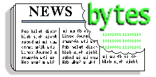

News Bytes
By Deividson Luiz Okopnik and Howard Dyckoff
|  |
Contents: |
Please submit your News Bytes items in plain text; other formats may be rejected without reading. [You have been warned!] A one- or two-paragraph summary plus a URL has a much higher chance of being published than an entire press release. Submit items to bytes@linuxgazette.net. Deividson can also be reached via twitter.
News in General
 Oracle Supports Java, Solaris but not Developer Community Control
Oracle Supports Java, Solaris but not Developer Community Control
Technology Titan Oracle just held its Oracle Open World mulit-user-group conference and released roadmaps and announcements impacting several projects in the Open Source sphere.
These updates include new releases for MySQL, Solaris, and Oracle Linux, new Oracle engineered servers and appliances, as well the next generation of the SPARC processor architecture with its partner Fujitsu. However, the future relationship between Oracle and developer institutions like the Java Community Process and OpenSolaris user groups were left uncertain and with hints of an adversarial turn.
Oracle seems to be backing away from OpenSolaris as a developer or small shop operating system by no longer sharing development source code with OpenSolaris distros. A panel of Oracle executives, speaking to the press, declined to discuss OpenSolaris but did state that new Solaris source code would eventually become open-sourced under the CDDL.
Oracle is altering Sun's prior relationship with the Open Source community while making its Solaris offerings more commercial and more like its Linux offerings, which are based on customer support contracts.
Back in August, an internal management memo to Solaris engineers was leaked to the OpenSolaris email distribution. While stressing Oracle's commitment to make Solaris "...a best-of-breed technology for Oracle's enterprise customers" and decision to hire the "top operating systems engineers in the industry," the memo described how Oracle would no longer share source code and builds on a regular basis, except with key partners. Instead, source code would be made available only after new version releases of Solaris:
"We will distribute updates to approved CDDL or other open source- licensed code following full releases of our enterprise Solaris operating system. In this manner, new technology innovations will show up in our releases before anywhere else. We will no longer distribute source code for the entirety of the Solaris operating system in real-time while it is developed, on a nightly basis.
"Anyone who is consuming Solaris code using the CDDL, whether in pieces or as a part of the OpenSolaris source distribution or a derivative thereof, would therefore be able to consume any updates we release at that time, under the terms of the CDDL, LGPL, or whatever license applies.
"We will have a technology partner program to permit our industry partners full access to the in-development Solaris source code through the Oracle Technology Network (OTN). This will include both early access to code and binaries, as well as contributions to us where that is appropriate."
For the complete memo, visit: http://unixconsole.blogspot.com/2010/08/internal-oracle-memo-leaked-on-solaris.html.
Oracle Outlines Core SPARC, Solaris and ZFS Innovations
During his keynote presentation at Oracle OpenWorld 2010, Oracle Executive Vice President John Fowler showcased technology innovations and outlined the value of hardware and software engineered to work together as in Oracle's high-end ExaData servers.
Reiterating Oracle's commitment to SPARC, Fowler introduced the industry's first 16-core processor, the SPARC T3, and SPARC T3 systems, which deliver optimized system performance for mission-critical applications. He unveiled eight world-record benchmark results, running the new SPARC T3 server family.
Fowler also unveiled the next-generation Sun ZFS Storage Appliance product line that provides unified storage solutions for deploying Oracle Database and data protection for Oracle Applications.
"We are focused on providing co-engineered systems - Oracle hardware and software engineered to work together - to continually drive better performance, availability, security and management, which translates into business value for our customers," said Fowler.
Oracle Outlines Next Major Release of Oracle Solaris
Besides increasing its investment in the Oracle Solaris operating system, Oracle is preparing for Oracle Solaris 11 in 2011 by releasing Solaris 11 Express in 2010 to provide customers with access to the latest Solaris 11 technology.
Oracle Solaris 11 will contain more than 2,700 projects with more than 400 inventions. Oracle Solaris 11 is expected to reduce planned downtime by being faster and easier to deploy, update and manage, and:
- Nearly eliminate patching and update errors with new
dependency-aware packaging tools;
- Build a custom stack of Solaris and Oracle Software in a physical or
virtual image to enforce enterprise quality and policy standards;
- Reduce maintenance windows by eliminating the need for up to 50
percent of system restarts;
- Recover systems in tens of seconds versus tens of minutes with Fast
Reboot;
- Receive proactive and preemptive support that reduces service
outages from known issues via My Oracle Support telemetry integration
with the Oracle Solaris fault management architecture.
Oracle Solaris 11 is being engineered with new capabilities for building, deploying and maintaining Cloud systems. Oracle Solaris 11 will be optimized for the scale and performance requirements of immediate and future Cloud-based deployments, and will scale to tens of thousands of hardware threads, hundreds of terabytes of system memory, and hundreds of Gigabits of I/O.
The first Oracle Solaris 11 Express release, expected by the end of calendar year 2010, will have an optional Oracle support agreement. This release is expected to be the path forward for developers, end-users and partners using previous generations of Solaris and OpenSolaris releases.
Over 1,000 SPARC and x86 systems from other hardware providers have been tested and certified by Oracle. Solaris 11 also will be powering the newly announced Oracle Exadata X2-2 and X2-8 Database Machines, as well as the Oracle Exalogic Elastic Cloud machine.
Oracle Outlines Plans for Java Platform
During the opening keynote of JavaOne 2010, Thomas Kurian, executive vice president, Oracle Product Development outlined plans for the future of the Java platform and showcased product demonstrations illustrating the latest Java technology innovations. Kurian's presentation covered four key areas of Java technology:
- Java Standard Edition (Java SE) - optimizing it for new application models and hardware; including extended support for running new scripting languages, increased developer productivity and lower operational costs. Kurian discussed the roadmap for JDK 7 and JDK 8, which will be based on OpenJDK, and highlighted some of the key OpenJDK projects.
- Java on the Client - Oracle is enhancing the programming model with JavaFX, to deliver advanced graphics, high-fidelity media and new HTML 5, JavaScript and CSS Web capabilities, along with native Java platform support.
- Java Enterprise Edition (Java EE) - Java EE will become more modular and programming more efficient with improvements such as dependency injection and reduced configuration requirements. Product demonstration highlighted how the Java EE 6 Web Profile reduces the size of the Java runtime for light-weight web applications, reducing overhead and improving performance.
- Java on Devices - Oracle will modernize the Java mobile platform by delivering Java with Web support to consumer devices. Oracle is also including new language features, small-footprint CPU-efficient capabilities for cards, phones and TVs, and consistent emulation across hardware platforms.
While 1.1 billion desktops run Java, 3 billion mobile phones run Java, and 1.4 billion Java Cards are manufactured each year. This is a very big market that impacts computing at every level.
"Oracle believes that the Java community expects results. With our increased investment in the Java platform, a sharp focus on features that deliver value to the community, and a relentless focus on performance, the Java language and platform have a bright future," said Kurian. "In addition, Oracle remains committed to OpenJDK as the the best open source Java implementation and we will continue to improve OpenJDK and welcome external contributors."
However, in its presentations, Oracle said very little about the well-established Java Community Process (JCP) that has directed the evolution of Java. Although many developers were concerned about this apparent diminishment of the JCP, most seemed pleased with the strong on-going commitment for Java by Oracle and its support of OpenJDK.
Android Poised to Overtake Blackberry, iPhone Market Share
The rapid growth of mobile devices running Google's Android operating system will continue at the expense of the other leading smartphone platforms, BlackBerry, iPhone, and even Windows Mobile, according to market share data compiled by the comScore marketing service.
For the quarter ending in July, comScore found that Android-based devices improved their share of the overall smartphone market, growing to 17 percent from 12 percent. comScore researchers found that Microsoft lost 2.2 percent of total smartphone market share while RIM tumbled 1.8 percent and Apple, despite launching the vaunted iPhone 4 in June, shed 1.3 percent.
RIM was the leading mobile smartphone platform in the U.S. with 39.3 percent share of U.S. smartphone subscribers, followed by Apple with 23.8 percent share. Google saw significant growth during the period, rising 5.0 percentage points to capture 17.0 percent of smartphone subscribers. Microsoft accounted for 11.8 percent of Smartphone subscribers, while Palm rounded out the top five with 4.9 percent
The July report found Samsung to be the top handset manufacturer overall with 23.1 percent market share, while RIM led among smartphone platforms with 39.9 percent market share.
For more information, see: http://www.comscore.com/Press_Events/Press_Releases/2010/9/comScore_Reports_July_2010_U.S._Mobile_Subscriber_Market_Share.
DeviceVM Adds MeeGo to Splashtop Instant-on Product
DeviceVM, a provider of instant-on computing software, previewed the next-generation of its Splashtop instant-on platform at the Intel Developer's Forum in San Francisco. The flagship Splashtop product has already shipped on millions of notebooks and netbooks worldwide from leading PC OEMs including Acer, ASUS, Dell, HP, Lenovo, LG, Sony and others. The company will offer a MeeGo-compliant version of the popular companion OS to all existing OEM customers, while enabling current users of Splashtop-powered systems to take advantage of a seamless upgrade in the first half of 2011.
First introduced in 2007, the flagship Splashtop product is a Linux-based instant-on platform that allows users to get online, access e-mail, and chat with friends seconds after turning on their PCs. The MeeGo project combines Intel's Moblin and Nokia's Maemo projects into one Linux-based, open source software platform for the next generation of computing devices.
By embracing MeeGo as the foundation for Splashtop, application developers have the possibility to distribute their software to millions of potential users leading to greater adoption of the MeeGo platform. DeviceVM will also consider pre-bundling popular applications along with distribution of the MeeGo-based Splashtop. In moving to a MeeGo-based platform, users will now be able to download, install and run hundreds of apps currently available from the Intel AppUp Center.
"Since the launch of Splashtop in late 2007, we have received thousands of requests from application developers to release an SDK," said Mark Lee, CEO and co-founder of DeviceVM. "By embracing MeeGo and moving Splashtop to be fully compliant with the specifications shepherded by the Linux Foundation, we will effectively open up Splashtop to allow developers to deliver high-value applications to audiences across a range of computing devices."
Demonstrations of the new Meego-based Splashtop product were seen during the IDF expo.
DeviceVM is an active Linux proponent, and earlier this year announced the election of CEO and co-founder Mark Lee to the Linux Foundation Board of Directors.
The MeeGo-based Splashtop is already being made available to leading PC OEMs currently shipping Splashtop on a range of device types. Consumer and commercial end-users will be able to upgrade to the new Splashtop in the first half of 2011.. For more information, visit http://www.splashtop.com.
NetApp and Oracle Agree to Dismiss IP Lawsuits
NetApp and Oracle have agreed to dismiss their pending mutual patent litigation, which began in 2007 between Sun Microsystems and NetApp. Oracle and NetApp want to have the lawsuits dismissed without prejudice. The terms of the agreement are currently confidential.
Sun released the code to the ZFS or Zettabyte file system used in Solaris to its developer community in 2005, but claimed to have developed it in-house years earlier. NetApp sued later, claiming that many of the features were similar to the WAFL (Write Anywhere File Layout) file system technology used by NetApp. There were also further IP patent suits regarding the Sunscreen technology that NetApp acquired in 2008.
No theft of code was alleged by either side. The conflict was around commercial use of similar ideas and design.
"For more than a decade, Oracle and NetApp have shared a common vision focused on providing solutions that reduce IT cost and complexity for thousands of customers worldwide," said Tom Georgens, president and CEO of NetApp. "Moving forward, we will continue to collaborate with Oracle to deliver solutions that help our mutual customers gain greater flexibility and efficiency in their IT infrastructures."
Broadcom releases open-source driver for its wireless chipsets
Broadcom has announced the initial release of a fully-open Linux driver for it's latest generation of 11n chipsets. The driver, while still a work in progress, is released as full source and uses the native mac80211 stack. It supports multiple current chips (BCM4313, BCM43224, BCM43225) as well as providing a framework for supporting additional chips in the future, including mac80211-aware embedded chips.
This is a major shift in policy by a dominant networking vendor.
In a blog entry on Linux.com, Linux Foundation Executive Director Jim Zemlin wrote:
"We are extremely happy to see this change for multiple reasons. One: it's obviously good to have more technology available to use; we want technology to "just work" with Linux and since Broadcom is a major technology supplier their absence from the mainline kernel was significant. Two: we have been working with our Technical Advisory Board on this issue for the last few years to educate vendors on Linux' model and why it's in their interest to open source their drivers."
The README and TODO files included with the sources provide more details about the current feature set, known issues, and plans for improving the driver.
The driver is currently available in staging-next git tree, available at: git://git.kernel.org/pub/scm/linux/kernel/git/gregkh/staging-next-2.6.git in the drivers/staging/brcm80211 directory.
Conferences and Events
- 9th USENIX Symposium on Operating Systems Design and Implementation (OSDI '10)
-
October 4-6 2010, Vancouver BC, Canada
The 9th USENIX Symposium on Operating Systems Design and Implementation (OSDI '10) will take place October 4-6, 2010, in Vancouver, BC, Canada.
Join us for OSDI '10, the premier forum for discussing the design, implementation, and implications of systems software. This year's program has been expanded to include 32 high-quality papers in areas including cloud storage, production networks, concurrency bugs, deterministic parallelism, as well as a poster session. Don't miss the opportunity to network with researchers and professionals from academic and industrial backgrounds to discuss innovative, exciting work in the systems area.

http://www.usenix.org/osdi10/lgb
- JUDCon 2010
-
October 7-8, Berlin, Germany
http://www.jboss.org/events/JUDCon.html.
- Silicon Valley Code Camp 2010
-
October 9-10, Foothill College. Los Altos, CA
http://www.siliconvalley-codecamp.com/.
- 17th Annual Tcl/Tk Conference (Tcl'2010)
-
October 11 - 15, 2010, Chicago/Oakbrook Terrace, Illinois, USA
We are pleased to announce the 17'th Annual Tcl/Tk Conference (Tcl'2010).
Learn from the experts and share your knowledge. The annual Tcl/Tk conference is the best opportunity to talk with experts and peers, cross-examine the Tcl/Tk core team, learn about what's coming and how to use what's here.
The Tcl Conference runs for a solid week with 2 days of tutorials taught by experts and 3 days of refereed papers discussing the latest features of Tcl/Tk and how to use them.
The hospitality suite and local bars and restaurants provides plenty of places to discuss details, make new friends and perhaps even find a new job or the expert you've been needing to hire.
17th Annual Tcl/Tk Conference (Tcl'2010)
- Foundation End User Summit 2010
-
October 12-13, Hyatt Regency, Jersey City, New Jersey
http://events.linuxfoundation.org/component/registrationpro/?func=details&did=40.
- Strange Loop 2010 Developer Conference
-
October 14-15th, Pageant Hotel, St. Louis, MO.
http://strangeloop2010.com/Interop.
- Enterprise Cloud Summit
-
October 18-19, New York, NY
http://www.interop.com/newyork/conference/cloud-computing-summit.php.
- Interop NY Conference
-
October 18-22, New York, NY
http://www.interop.com/newyork/PayPal.
- Innovate 2010 Conference
-
October 26-27, Moscone West, San Francisco, CA
https://www.paypal-xinnovate.com/index.html.
- CSI Annual 2010
-
October 26-29, Washington, D.C.
http://csiannual.com/.
- Linux Kernel Summit
-
November 1-2, 2010. Hyatt Regency Cambridge, Cambridge, MA
http://events.linuxfoundation.org/events/linux-kernel-summit.
- ApacheCon North America 2010
-
1-5 November 2010, Westin Peachtree, Atlanta GA
The theme of the ASF's official user conference, trainings, and expo is "Servers, The Cloud, and Innovation," featuring an array of educational sessions on open source technology, business, and community topics at the beginner, intermediate, and advanced levels.
Experts will share professionally directed advice, tactics, and lessons learned to help users, enthusiasts, software architects, administrators, executives, and community managers successfully develop, deploy, and leverage existing and emerging Open Source technologies critical to their businesses.
ApacheCon North America 2010
- QCon San Francisco 2010
-
November 1-5, Westin Hotel, San Francisco CA
http://qconsf.com/.
- ZendCon 2010
-
November 1-4, Convention Center, Santa Clara, CA
http://www.zendcon.com/.
- 9th International Semantic Web Conference (ISWC 2010)
-
November 7-11, Convention Center, Shanghai, China
http://iswc2010.semanticweb.org/.
- LISA '10 - Large Installation System Administration Conference
-
November 7-12, San Jose, CA
http://usenix.com/events/.
- ARM Technology Conference
-
November 9-11, Convention Center, Santa Clara, CA
http://www.arm.com/about/events/12129.php.
- Sencha Web App Conference 2010
-
November 14-17, Fairmont Hotel, San Francisco CA
http://www.sencha.com/conference/.
Distro News
WeTab tablet first with MeeGo open operating system
In September, WeTab GmbH announced its tablet computer, the WeTab, developed in cooperation with Intel, just preceeding the IFA international trade fair for consumer electronics in Berlin and IDF in San Francisco. The WeTab, which went on to the German market in September, is the first tablet worldwide based on MeeGo.
WeTab OS, the WeTab operating system, is based on the free Linux distribution MeeGo and integrates runtime environments for various other technologies. In addition to native Linux apps, many other applications can run on the WeTab, including Android apps, Adobe Air applications and MeeGo apps. Several apps that may be interesting for the user have been compiled and are available on the WeTab Market, from where they can be loaded directly onto the WeTab. This means that developers can program in the languages they are familiar with and users can choose from an abundance of very different applications.
The Web-browser plays a special role here and is based on the free HTML rendering engine WebKit, enabling fast surfing and including suport for HTML5, Adobe Flash and Java.
"Working intensively with Intel, we have developed the WeTab OS with MeeGo to meet the requirements of a tablet user in the best way possible. The tablet runs extremely fast and, in addition to native apps, also provides direct access to countless Web-based apps", says Stephan Odörfer, Managing Director of 4tiitoo AG, which is are also involved in this joint venture with WeTab GmbH.
Wolfgang Petersen, Director of Intel Software and Services Group at Intel Deutschland GmbH, says: "The WeTab is the first tablet based on MeeGo and the Intel Atom processor. MeeGo is designed for a broad range of devices. Implementing MeeGo on the WeTab shows just how the operating system can be adapted for use on a tablet."
WeTab GmbH is a joint venture between 4tiitoo AG and Neofonie GmbH.
You can find more information at http://www.wetab.mobi, http://www.intel.com and http://www.meego.de.
Linpus Lite for MeeGo netbook edition adds Touch Support
Linpus announced in September further enhancements to its Meego-based version of its Linpus Lite, which is optimized for the Intel Atom processor. Linpus Lite is their consumer device operating system designed for a better mobile Internet experience.
Linpus originally brought one of the first MeeGo-based operating systems to market in time for Computex. They have since upgraded it with a number of improvements. First, they have included better categorization of the social networking and recent object panel in Myzone. Linpus has created a tab for each of the different sites and for recent objects, making it easier to find your messages.
Second, they have also added touch support and dual user interfaces. You have the choice of two interfaces: MeeGo and Linpus' Simple Mode. You can switch easily between these two modes by one tap on an icon in Myzone or in Simple Mode.
Linpus' version has also added a number of other enhancements:
- Extremely fast boot - now under 10 seconds
- More social network support in Myzone - Flickr and MySpace
- Online support - Linpus commercial grade LiveUpdate function to
deliver device-specific patches, upgrades and new applications to your
system
- Media Player - added support for audio and video streaming
- Power management - idle mode and auto-suspend net power savings of
15 to 20%
- Network Manager - more 3G modems and device-to-device file transfer,
VPN, PPPoE and WPA2-enterprise support;
- Linpus Windows Data Applications - for dual-booting with Windows;
- Peripheral support - extensive support especially for graphics,
including the Intel full series graphics and most of NVIDIA and ATI;
- Input method - multi-language input method and international
keyboard support through iBus;
- File Manager - a Windows-like experience means that the partitions
of USB drives are now alphabetically labeled.
Linpus (http://www.linpus.com) has worked on open source solutions across numerous platforms and products, garnering a reputation for engineering excellence as well as highly intuitive user interfaces. The MeeGo project combines Intel's Moblin and Nokia's Maemo projects into one Linux-based, open source software platform for the next generation of computing devices.
Software and Product News
Oracle Enhances New Solaris Release
Building on its leadership in the enterprise operating system market, Oracle today announced Oracle Solaris 10 9/10, Oracle Solaris Cluster 3.3 and Oracle Solaris Studio12.2. 10 of the top 10 Telecommunications Companies, Utilities and Banks use Oracle Solaris.
Oracle Solaris is now developed, tested and supported as an integrated component of Oracle's "applications-to-disk" technology stack, which includes continuous major platform testing, in addition to the Oracle Certification Environment, representing over 50,000 test use cases for every Oracle Solaris patch and platform released.
Oracle Solaris 10 9/10 provides networking and performance enhancements, virtualization capabilities, updates to Oracle Solaris ZFS and advancements to leverage systems based on the latest SPARC and x86 processors.
The Oracle Solaris 10 9/10 update includes new features, fixes and hardware support in an easy-to-install manner, preserving full compatibility with over 11,000 third-party products and customer applications.
Oracle Solaris is designed to take advantage of large memory and multi-core/processor/thread systems and enable industry-leading performance, security and scalability for both existing and new systems.
Oracle Solaris Cluster 3.3 builds on Oracle Solaris to offer the most extensive, enterprise high availability and disaster recovery solutions.
Enables virtual application clusters via Oracle Solaris Containers in Oracle Solaris Cluster Geographic Edition and integrates with Oracle WebLogic Server, Oracle's Siebel CRM, MySQL Cluster and Oracle Business Intelligence Enterprise Edition 11g for consolidation in virtualized environments.
Provides the highest level of security with Oracle Solaris Trusted Extensions for mission-critical applications and services. Supports InfiniBand on public networks and as storage connectivity and is tightly integrated and thoroughly tested with Oracle's Sun Server and Storage Systems.
Oracle Solaris Studio 12.2 provides an advanced suite of tools designed to work together for the development of single, multithreaded, and distributed applications. With its integrated development environment (IDE), including a code-aware editor, workflow, and project functionality, Oracle Solaris Studio helps increase developer productivity.
Oracle Solaris 10 9/10 features include:
Networking and database optimizations for Oracle Real Application
Clusters (Oracle RAC).
Oracle Solaris Containers now provide enhanced "P2V" (Physical to Virtual) capabilities to allow customers to seamlessly move from existing Oracle Solaris 10 physical systems to virtual containers quickly and easily.
Increased reliability for virtualized Solaris instances when deployed using Oracle VM for SPARC, also known as Logical Domains.
Oracle Solaris ZFS online device management, which allows customers to make changes to filesystem configurations, without taking data offline.
New Oracle Solaris ZFS tools to aid in recovering from problems related to unplanned system downtime. Operating system, database and other Oracle Solaris patches are now verified and coordinated to provide the highest levels of quality, confidence and administrative streamlining.
New Release of Oracle Secure Global Desktop
Further enhancing its comprehensive portfolio of desktop virtualization solutions, Oracle released Oracle Secure Global Desktop 4.6 in September. Secure Global Desktop is an access solution that delivers server-hosted applications and desktops to nearly any client device, with higher security, decreased operational costs, and increased mobility.
With a highly secure architecture, Oracle Secure Global Desktop helps keep sensitive data in the datacenter behind the corporate firewall, and not on end user systems or in the vulnerable demilitarized zone (DMZ), and can only be accessed by authenticated users with appropriate privileges.
Oracle Secure Global Desktop enables an additional layer of security for accessing sensitive enterprise applications, beyond using a web browser alone, by providing a highly secure Java-based Web client that does not retain cookies or utilize Web page cache files that could be exploited.
The new release lowers administration overhead by delivering secure access to server-hosted applications and desktops from a wide variety of popular client devices. Applications and desktops that run on Windows, Oracle Solaris, Oracle Enterprise Linux, and other UNIX and Linux versions are supported.
Oracle Secure Global Desktop 4.6 is part of "Oracle Virtualization," a comprehensive desktop-to-datacenter virtualization portfolio, enabling customers to virtualize and manage their full hardware and software stack from applications to disk.
Oracle Secure Global Desktop 4.6 enhances the security and centralized
management of applications in the datacenter by delivering:
- Greater browser flexibility: The Secure Global Desktop client has
the flexibility to be used with nearly any Java-enabled browser to
access server-hosted browser instances where the server-hosted
application requires a different browser, plug-ins, or settings;
- Enhanced availability: The Array Resilience feature automatically
re-establishes connections to the server array after a primary server
or network failure to provide higher levels of availability;
- Enhanced application launch control for users: Dynamic Launch
reduces administration overhead by giving end users greater control
over launching applications;
- Easier integration with third party infrastructure: Integration
with third party virtual desktop infrastructure (VDI) connection
brokers, in addition to the existing integration with Oracle Virtual
Desktop Infrastructure;
- Dynamic Drive Mapping allows users to "hot-plug" hard disk drives
and USB drives on their PCs and utilize them in Oracle Secure Global
Desktop sessions;
- Configurable directory services and password management:
Administrators can configure individual settings for multiple
directory services, such as Oracle Internet Directory, Microsoft
Active Directory and other LDAP servers.
"The new capabilities delivered in Oracle Secure Global Desktop 4.6 underscore our focus on making applications easier to deploy, manage and support in virtualized datacenter environments," said Wim Coekaerts, senior vice president, Linux and Virtualization Engineering, Oracle. "Oracle Secure Global Desktop 4.6 is the latest of many new desktop virtualization products and capabilities recently announced including new releases of Oracle VM VirtualBox, Sun Ray Software and Oracle Virtual Desktop Infrastructure. This demonstrates Oracle's continued commitment to providing a comprehensive desktop to datacenter portfolio."
For more information, visit http://www.oracle.com/us/technologies/virtualization/index.htm.
| Share |

|
Talkback: Discuss this article with The Answer Gang
Deividson Luiz Okopnik
Deividson was born in União da Vitória, PR, Brazil, on 14/04/1984. He became interested in computing when he was still a kid, and started to code when he was 12 years old. He is a graduate in Information Systems and is finishing his specialization in Networks and Web Development. He codes in several languages, including C/C++/C#, PHP, Visual Basic, Object Pascal and others.
Deividson works in Porto União's Town Hall as a Computer Technician, and specializes in Web and Desktop system development, and Database/Network Maintenance.
Howard Dyckoff
Howard Dyckoff is a long term IT professional with primary experience at
Fortune 100 and 200 firms. Before his IT career, he worked for Aviation
Week and Space Technology magazine and before that used to edit SkyCom, a
newsletter for astronomers and rocketeers. He hails from the Republic of
Brooklyn [and Polytechnic Institute] and now, after several trips to
Himalayan mountain tops, resides in the SF Bay Area with a large book
collection and several pet rocks.
Howard maintains the Technology-Events blog at
blogspot.com from which he contributes the Events listing for Linux
Gazette. Visit the blog to preview some of the next month's NewsBytes
Events.